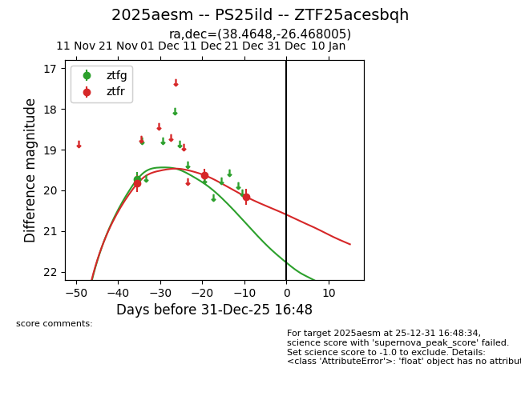
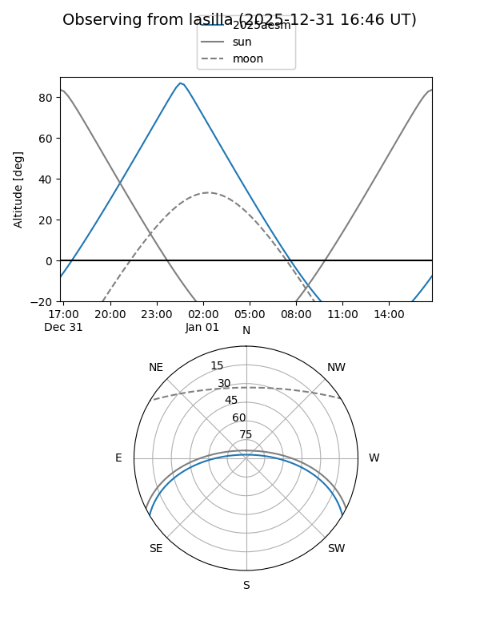
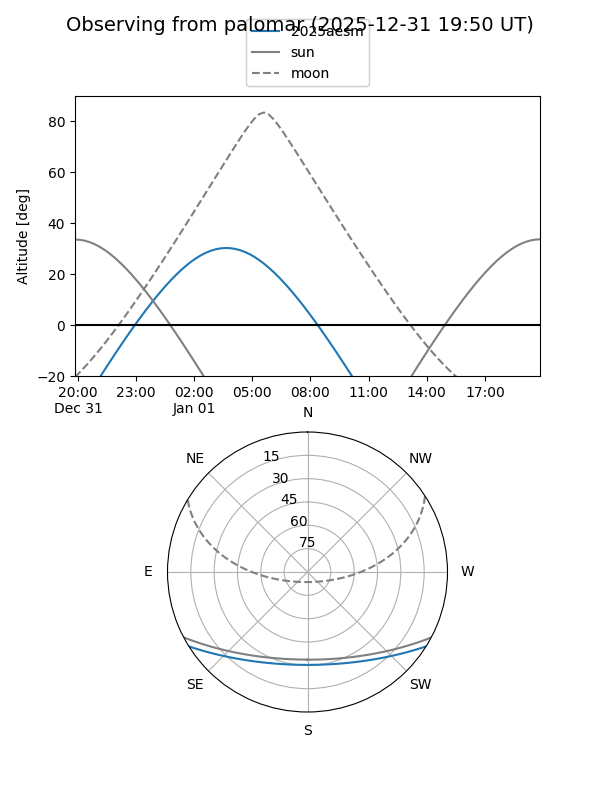
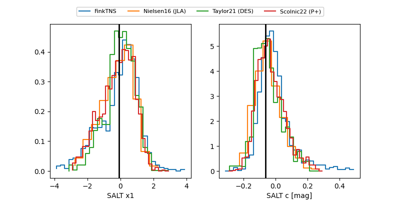

2025aesm
Target 2025aesm at 2025-12-24 16:17
Aliases and brokers:
FINK: fink-portal.org/ZTF25acesbqh
Lasair: lasair-ztf.lsst.ac.uk/objects/ZTF25acesbqh
ALeRCE: alerce.online/object/ZTF25acesbqh
TNS: wis-tns.org/object/2025aesm
YSE: ziggy.ucolick.org/yse/transient_detail/2025aesm
alt names
ZTF25acesbqh (ztf,fink_ztf)
2025aesm (tns,yse)
PS25ild (panstarrs)
Coordinates:
equatorial (ra, dec) = 38.4648,-26.46801
equatorial (HMS+DMS) = 02:33:51.55,-26:28:04.82
galactic (l, b) = (217.1546,-67.17463)
Flags:
Photometry:
last ztfg=19.73, ztfr=20.16
1 ztfg, 3 ztfr detections
Lightcurve

Visibility


Additional plots
